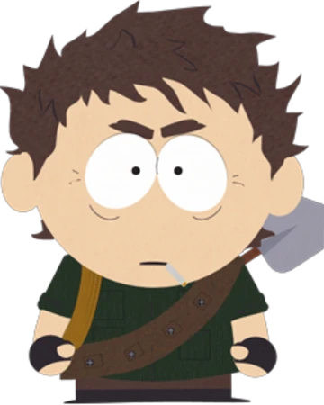
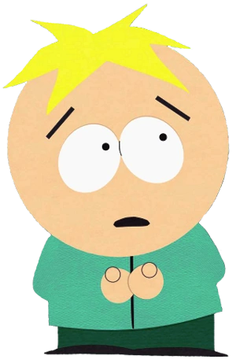
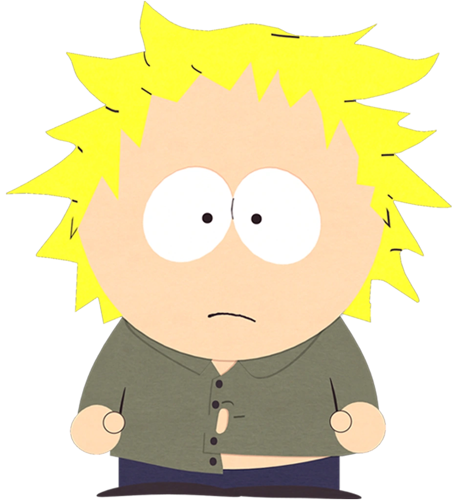
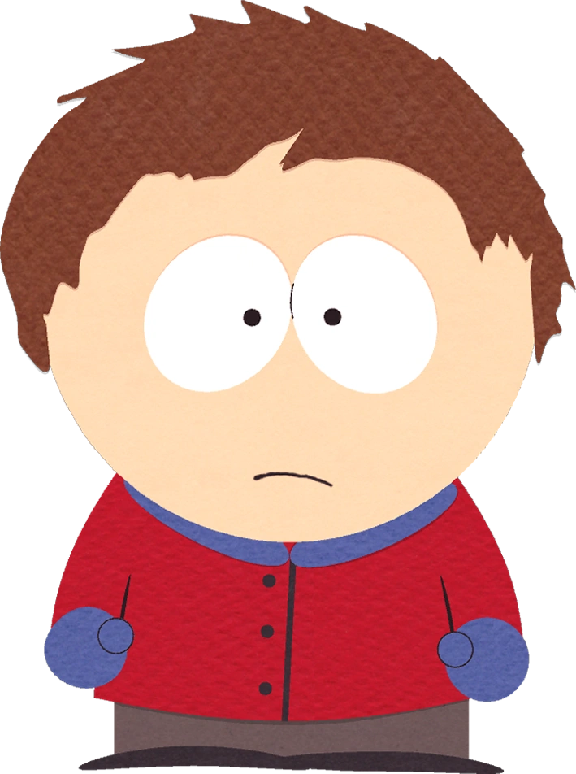

|
Эрик КартманСказочный дебил. Мечтает, чтобы евреи сдохли, но перед этим Кайл должен отсосать его яйца ♡ |
 |
Кенни МаккормикПодождите... Кто такой Кенни? |
 |
Кайл БрофловскиИменно тот чел, который был обязан пососать картмановские яички, но не сделал этого. Ай-яй-яй. |
 |
Стэн МаршНе в депрессии, а просто спился :((( |
|  |
Кристоф "Крот"Один из особенных детей в Южном Парке, у которых есть уши... |
|  |
Баттерс СтотчБедняжка, которого всегда все обижают. Даже при написании сайта он случайно пострадал. |
 |
Крейг ТакерКлевый чел и отличный парень! Добрый, позитивный, заботливый, милый, очень душевный и разговорчивый, а также сильный и темнокожий. |
|  |
Твик ТвикДерганная омежка. <---Готов набить ебало тем, кто так его назвал. |
|  |
Клайд ДонованКого не спросишь — никто не знает, кто это... Лошок, короче. |
Это было краткое описание некоторых персонажей!